2026 年大乐透 / 双色球开奖数据研究
数据来源：中国体育彩票、中国福利彩票官方网站开奖公告 | 区间：2026-01-03 — 2026-10-24 | 数据截至 26121 期
声明：本页仅对已公布的历史开奖号码做记录与可视化，不含任何预测、推荐或投注建议。图中红色虚线为全期算术平均值，属描述统计量，不代表未来结果。
大乐透
前区 5 个（1—35）+ 后区 2 个（1—12），每期共 7 个号码
期数121
区间26001 — 26121
日期2026-01-03 → 2026-10-24
① 七个号码逐期连续折线
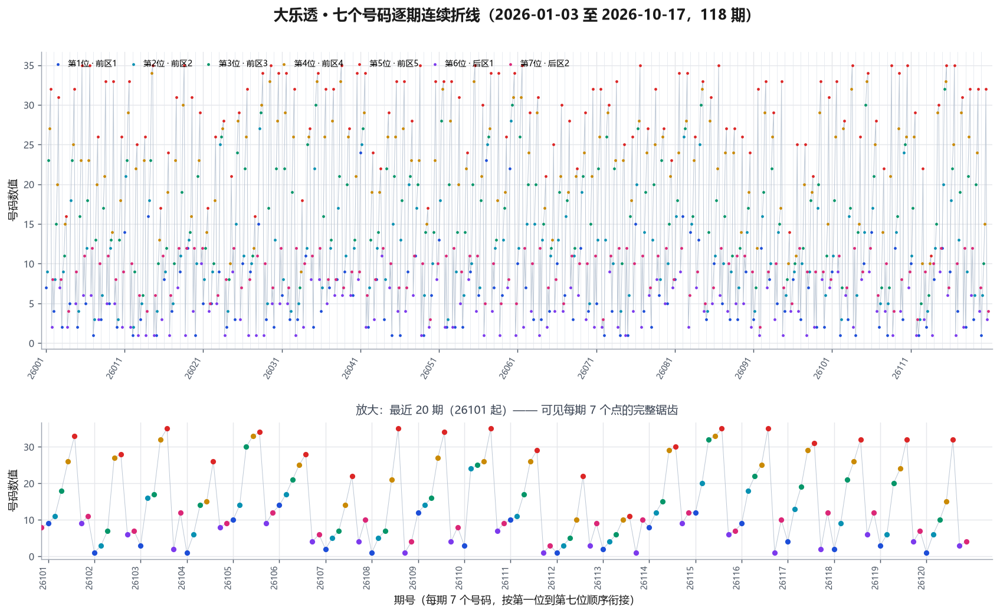
每期 7 个号码按第 1 → 第 7 位顺序排列，一期接一期连续衔接
② 单个位次走势（第 1 — 第 7 位，共 7 张）
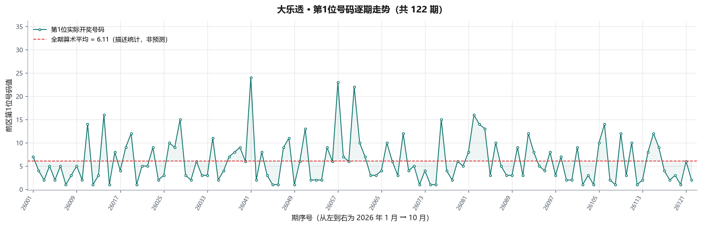
第 1 位号码逐期走势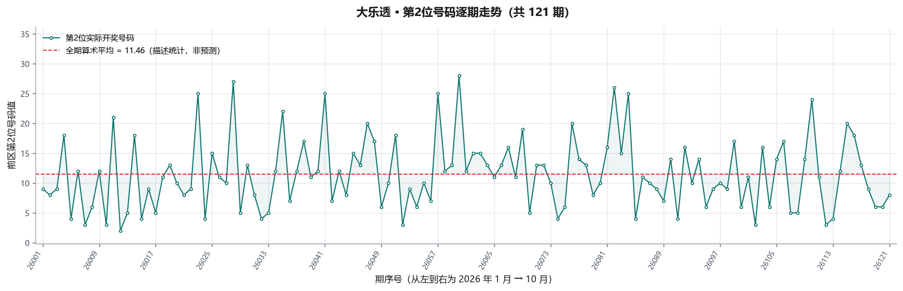
第 2 位号码逐期走势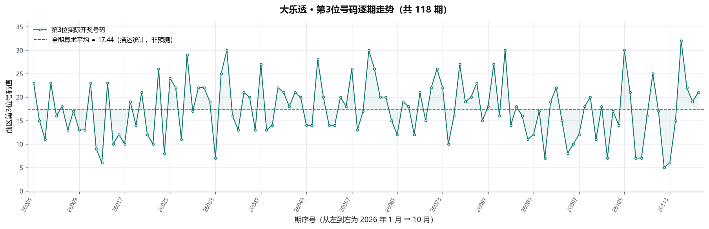
第 3 位号码逐期走势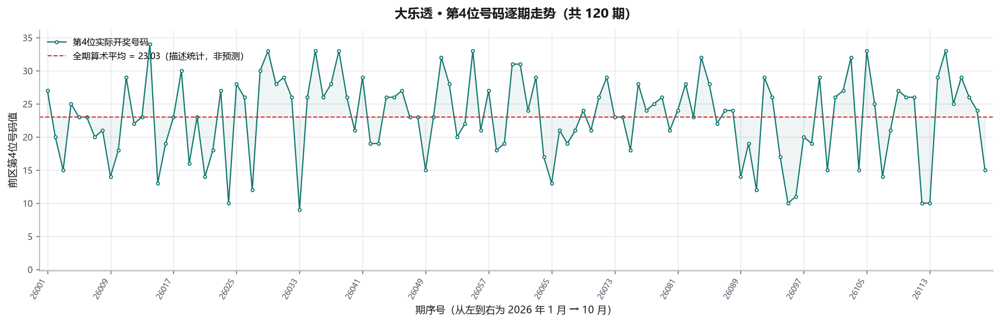
第 4 位号码逐期走势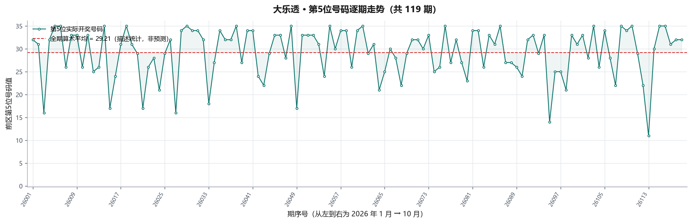
第 5 位号码逐期走势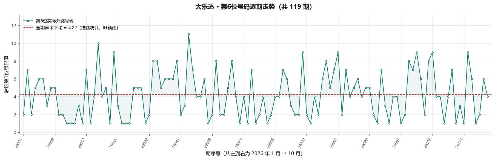
第 6 位号码逐期走势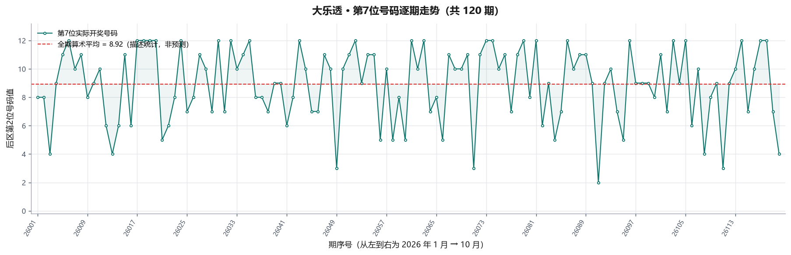
第 7 位号码逐期走势双色球
红球 6 个（1—33）+ 蓝球 1 个（1—16），每期共 7 个号码
期数121
区间2026001 — 2026121
日期2026-01-01 → 2026-10-22
① 七个号码逐期连续折线
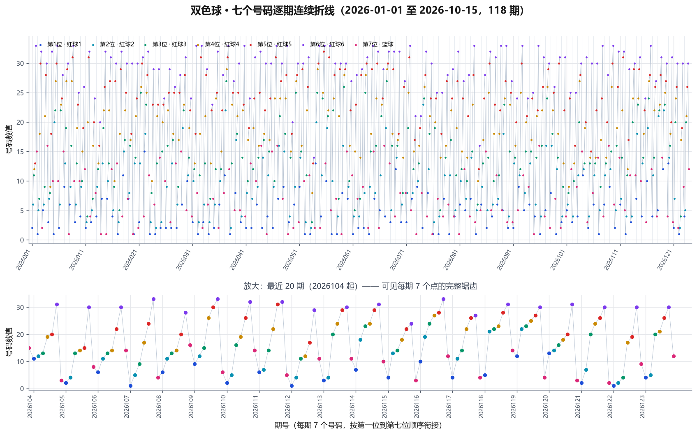
每期 7 个号码按第 1 → 第 7 位顺序排列，一期接一期连续衔接
② 单个位次走势（第 1 — 第 7 位，共 7 张）
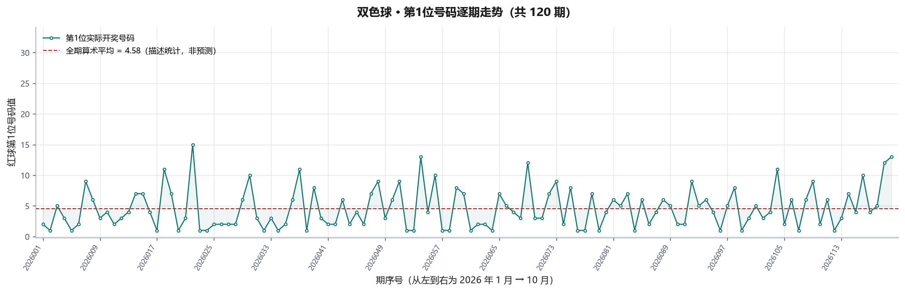
第 1 位号码逐期走势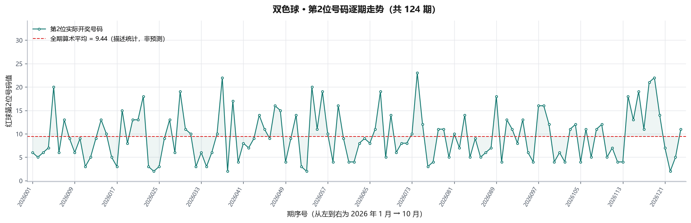
第 2 位号码逐期走势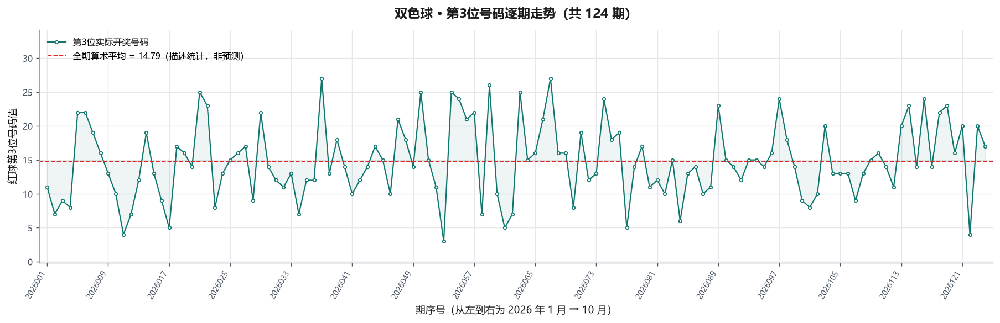
第 3 位号码逐期走势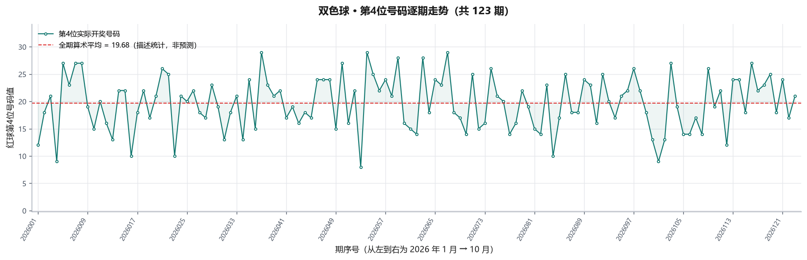
第 4 位号码逐期走势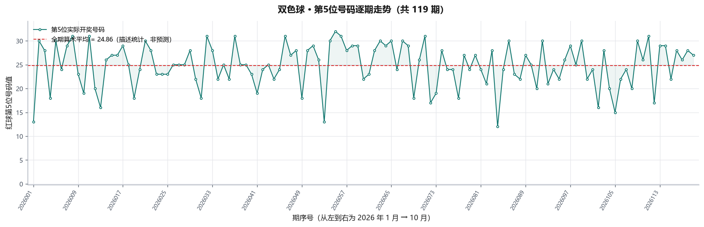
第 5 位号码逐期走势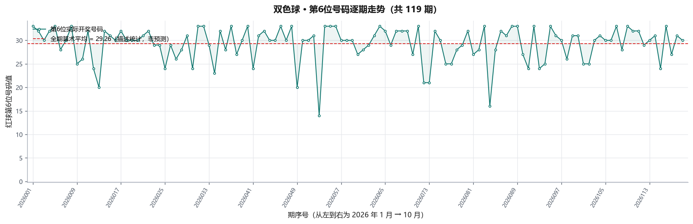
第 6 位号码逐期走势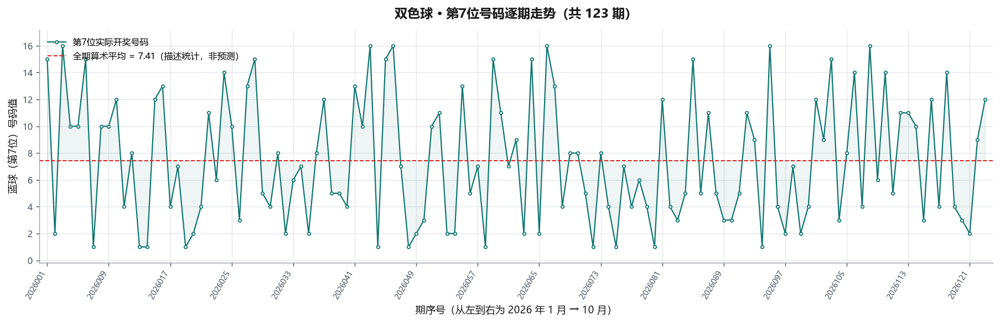
第 7 位号码逐期走势